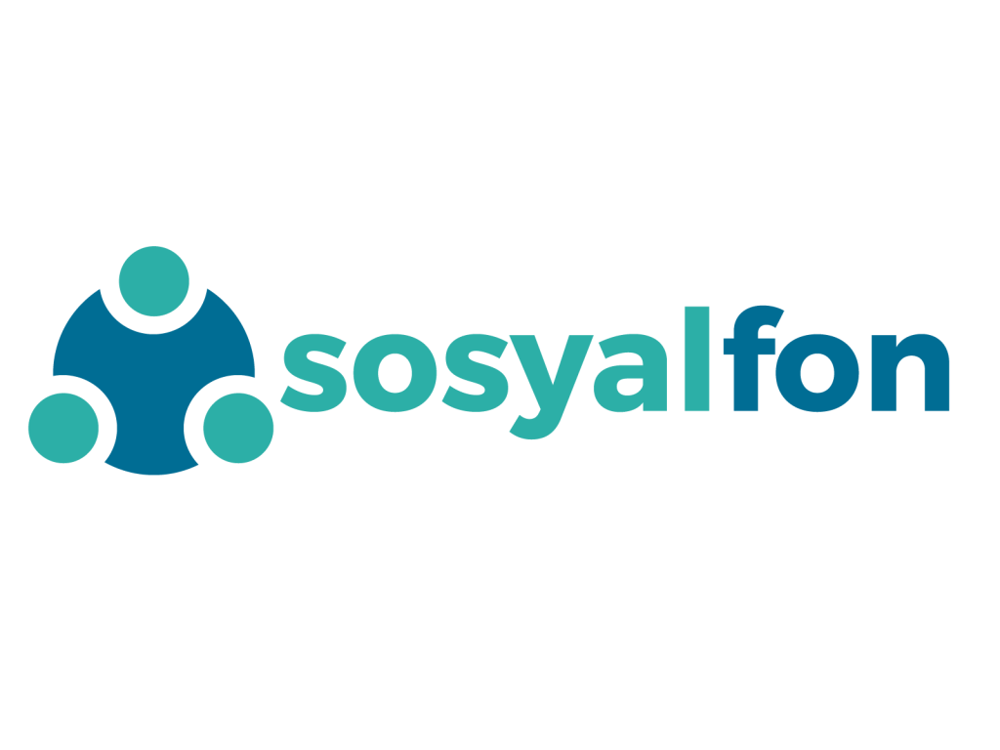

Anasayfa
Sosyal Fon Nedir?
Kayıt Ol
Anasayfa
Sosyal Fon Nedir?
Kayıt Ol
NEDİR?
|  |
Sosyalfon, Birleşmiş Milletler Sürdürülebilir Kalkınma Amaçları doğrultusunda çalışmalar gerçekleştiren tüm aktörleri bir araya getirmek ve desteklemek üzere kurulmuş köprü platformdur. Sosyalfon, sosyal fayda aktörlerini başlıca kurumlar, sosyal girişimler, STKlar, öğrenci toplulukları ve bireyler olmak üzere 5 ana kategoride ele alır. Her gruba yönelik farklı stratejik çalışmalar yürüten Sosyalfon, her adımını sürdürülebilir bir dünya hedefine destek verebilmek için atmaktadır. Sosyalfon’un öncelikli olarak yürütmekte olduğu model, “Sosyal Girişim–Kurumsal Firma İşbirliği”dir. Kurumsal firmaların iş süreçlerinde sosyal girişimcilerle sağlayacakları potansiyel işbirliklerini maksimize ve sistematize eden bu modelde, Sosyalfon “Sosyalfon Sosyal Girişim Havuzu”ndaki sosyal girişimler ile çalışmaktadır. Türkiye’nin önde gelen sosyal girişimlerinden oluşan bu havuza üyelik başvurusu yıl boyu açıktır. Siz de “Sosyal Dönüşümün Aksiyon Noktası”nda yer almak istiyorsanız bize ulaşın; daha sürdürülebilir bir dünya hayalinde sizinle de birlik olalım! |
|